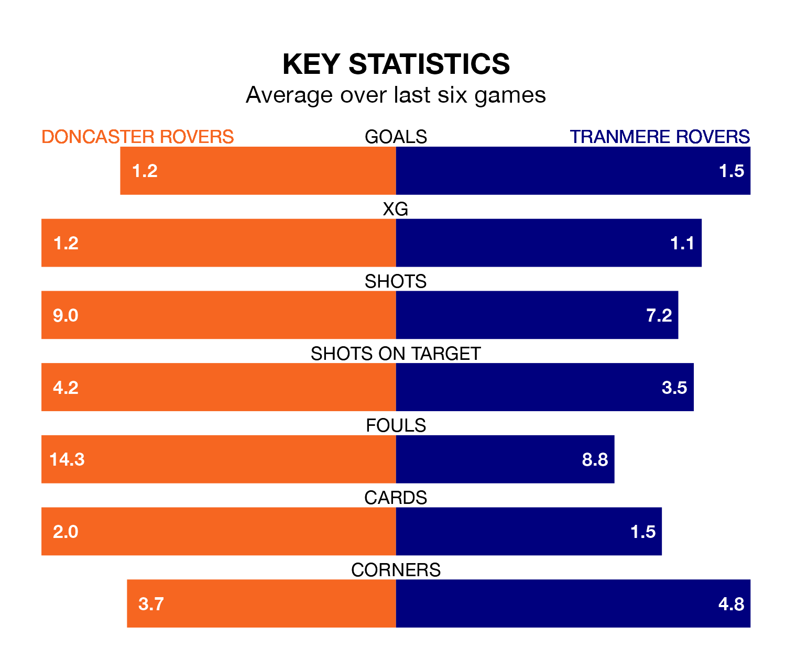

Doncaster Rovers host Tranmere Rovers on Saturday at the Eco-Power Stadium in EFL League Two.
In their last league match, on February 3, Doncaster drew with Sutton United 1-1 away, with their goal scored by Joe Ironside.
Tranmere also drew, 0-0 at home against Crewe Alexandra.
Doncaster are 22nd in the table after 29 games, of which they have won eight and drawn five, earning 29 points.
Tranmere are six places ahead of Doncaster Rovers in 16th, with 11 wins and four draws putting them on 37 points.
With 33 goals in 29 games so far this season, the Rovers are the league's third-lowest scorers with 1.1 goals per game. And they are conceding more than average, letting in 53 goals at a rate of 1.8 per game.
Tranmere Rovers, meanwhile, are average scorers, with 1.5 goals per game. They have conceded 1.4 goals per game.
The hosts are in disappointing form in EFL League Two, with one win and two draws from their last six games.
With three wins and a draw over that period, the away side's form is better – they have taken 10 points from 18, compared to Doncaster's five.
In the last five years, Doncaster and Tranmere have played each other on four occasions. Doncaster won three of them and Tranmere one.
On average, the Rovers scored 1.8 goals and Tranmere 1.0 in those matches.
Their last meeting was on October 20, when Doncaster won 2-1 away.
Updated: 14:59 (UTC), 05/02/24